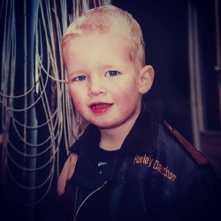

Home
Werk
Vorige opleiding
Motivatie
Mijn digitale portfolio.

Nicky Devilee.
Ik ben Nicky, ik woon in Vuren en ben 18 jaar oud.
Maak gebruik van het menu hierboven om bij mijn werk, mijn vorige opleiding en mijn motivatie te komen.